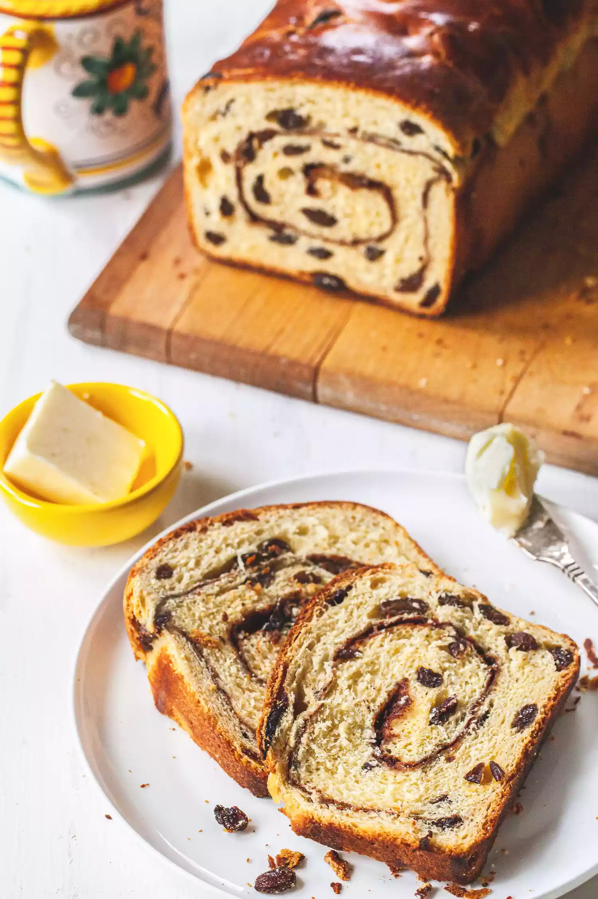

Cinnamon Swirl Raisin Bread

Description
This cinnamon sugar-swirled brioche loaf, studded with raisins, has a tender and light crumb. With an overnight rise, you'll have homemade cinnamon raisin bread ready in time for a special occasion breakfast.
Ingredients
For the dough
- 1/2 cup warm water (about 110°F)
- 1 tablespoon instant yeast
- 3 1/4 cups (390g) unbleached all-purpose flour, divided
- 3 large eggs
- 1 large egg yolk
- 1/4 cup sugar
- 1 teaspoon salt
- 8 tablespoons (113g) unsalted butter, room temperature
- 1 1/4 cups raisins
For the cinnamon filling
- 1/4 cup sugar
- 4 teaspoons cinnamon
- 2 tablespoons milk
For the topping
- 1 egg beaten with 1 tablespoon water (for the egg wash)
Steps
- Make the sponge:
With the paddle attachment in the bowl of a stand mixer on low speed, mix the water, yeast, and 1/2 cup of the flour until well blended. Cover the bowl with a plate and let rise at room temperature for 45 minutes, or until the dough looks puffy and small bubbles appear.
- Mix the dough:
With the paddle attachment on medium speed, beat in the eggs and egg yolk one at a time , incorporating each egg into the dough before adding the next one. Scrape down the sides of the bowl as necessary. Beat in the sugar, salt and 1 1/2 cups of the flour and mix until smooth.
Switch to the dough hook. On medium-low speed, gradually sprinkle in the remaining 1 1/4 cups flour until incorporated (about 3 minutes.) Knead on medium speed for about 10 minutes, or until smooth and elastic. Stop to scrape down the dough hook occasionally.
- Add the butter and raisins:
On medium speed with the dough hook, mix in the butter 1 tablespoon at a time, mixing until each addition is incorporated. Scrape down the sides of the bowl from time to time. When all the butter has been thoroughly absorbed, the dough will be very soft and sticky. Take your time (about 4 minutes for this step.)
Add the raisins to the dough bowl and mix until incorporated.
- Refrigerate overnight for the first rise:
Scrape the dough into a clean bowl and pat it into a ball. Place a piece of plastic wrap directly on the surface of the dough and let rise for 8 or up to 12 hours in the refrigerator.
- Make the cinnamon sugar:
In a small bowl, thoroughly mix the sugar and cinnamon.
- Shape the loaf:
Grease a 9x5-inch loaf pan with baking spray. Turn the dough onto a lightly floured work surface and pat it flat to form a rectangle approximately 8 1/2x6 1/2 inches.
Brush the dough with the milk and sprinkle with the cinnamon sugar.
Place the short side of the rectangle parallel to the countertop. Starting with the edge nearest you, roll the dough tightly into a log. Pinch the seam and roll again to form a uniform log shape.
Drop the log into the oiled loaf pan with the seam side down. Tent the pan with a plastic bag, leaving 3 to 4 inches of headroom and tucking the open end of the bag under the pan.
- Let the shaped loaf rise:
Let rise for about 2 hours, or until the dough is puffy and springs back slowly when gently poked with a finger. Your finger should leave a slight impression. Precise rising time depends on the temperature of the dough and the room it is in.
- Preheat the oven:
About 1/2 hour before the dough has finished rising, set a rack in the middle position and preheat the oven to 400ºF.
- Bake the loaf:
Brush the loaf with egg wash. Set the pan in the oven and turn down the oven to 375ºF. Bake for 35 to 40 minutes, or until the top is golden brown. To check for doneness, tip the loaf onto a cooling rack and insert an instant-read thermometer into the bottom of the loaf. The loaf is done when it registers about 190ºF. If it is not quite done, return the loaf pan and bake for 5 more minutes. If it has already turned a deep brown, set a piece of aluminum foil loosely on top of the loaf.
- Cool the loaf:
Set on a rack to cool completely before slicing.